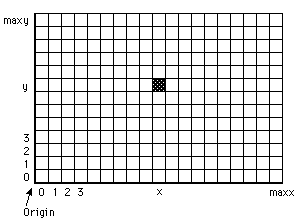

Draw.Dot (x, y, Color : int)
The Draw.Dot procedure is used to color the dot (pixel) at location (x, y) using the specified Color.

This program randomly draws dots with random colors. The maxx, maxy and maxcolor functions give the maximum x, y and color values.
View.Set ("graphics")
var x, y, c : int
loop
x := Rand.Int (0, maxx) % Random x
y := Rand.Int (0, maxy) % Random y
c := Rand.Int (0, maxcolor) % Random color
Draw.Dot (x, y, c)
end loop
The screen must be in a "graphics" mode. If the screen is not in a "graphics" mode, an error will occur. See View.Set for details.
Exported qualified. This means that you can only call the function by calling Draw.Dot, not by calling Dot.
view_set.html, maxx.html, maxy.html and the various procedures in the drawmodule.html unit.